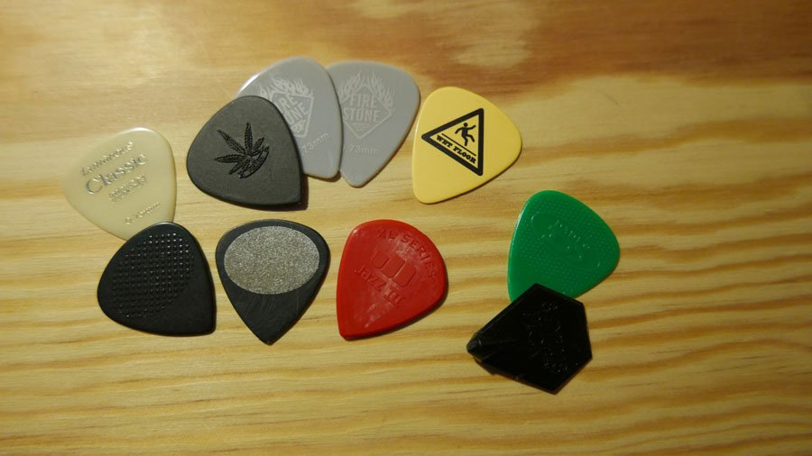

Video Introduttivo
La posizione corretta della mano sinistra
Base: La mano sinistra deve essere rilassata e posizionata in modo da facilitare i movimenti sulle corde.
✅Posizione del pollice✅
- ✅Il pollice: deve stare dietro al manico, tra il centro e la parte superiore, allineato al dito medio, che fornisce stabilità e forza nella pressione delle corde.
- ✅Le dita: devono essere arcate, con le falangi piegate verso l'esterno, in modo da premere le corde con la punta del dito (importante mentre si fanno gli accordi).
- ✅Allineamento nocche: devono essere allineate e parallele al manico della chitarra, con il palmo leggermente distanziato dal bordo del manico.
- ✅Pressione sulle corde: le dita devono premere le corde vicino al tasto verso il body, in direzione della rosetta, per ottenere un suono più pulito.
❌Errori Comuni:❌
- ❌Pollice avvolto sul manico: evitare di avvolgere il pollice sopra il manico, limita la mobilità delle dita e può causare tensione (tranne per certi accordi)
- ❌Dita piatte sulle corde:premere le corde con la parte piatta del dito anzichè con la punta può portare a suono ovattati e interferire con le corde adiacenti.
- ❌Gomito troppo vicino al corpo: tenere il gomito troppo vicino al corpo può causare una flessione eccessiva del polso, limitando la mobilità e causando crampi.
- ❌Troppa tensione: applicare troppa forza nel premere le corde o mantenere una postura rigida può portare a fatica muscolare e potenziali infortuni.
- ❌Stringere troppo il manico: stanca la mano eccessivamente.
- Premere lontano dal fret: causa suoni sporchi o "buzzing".
La posizione corretta della mano destra
Per ottenere una tecnica efficace è importante considerare sia l'impugnatura corretta che la scelta del plettro più adatto al proprio stile musicale.
Scelta del plettro:
La selezione dipende da vari fattori, tra cui lo spessore, il materiale e la forma, che influiscono nel suono e la tecnica.
Spessore:
- Extra Light (circa 0,45 mm): ideale per chi suona in modo delicato, spesso utilizzato per la chitarra acustica.
- Light (circa 0,46 - 0,70 mm): preferito per accompagnamenti ritmici leggeri.
- Medium (0,71 - 0,84 mm): una scelta versatile, adatta ai principianti che stanno esplorando diversi stili.
- Heavy (0,85 - 0,96 mm): comunemente usato nella chitarra elettrica per assoli e parti che richiedono maggiore precisione.
- Extra Heavy (oltre 0,96 mm): offre un attacco deciso, adatto a stili che richiedono un suono potente.
Materiale:
I plettri possono essere realizzati in vari materiali come nylon, celluloide, delrin e altri. Sperimenta per trovare quello adatto a te essendo che ogni materiale ha una sensazione differente.
Forma:
Le forme comuni includono standard, triangolare, a goccia (teardrop), e appuntita (sharp). La scelta della forma influisce sulla presa e sul suono delle corde.
✅Impugnatura del plettro:✅
- ✅Posizione delle dita: Tieni il plettro tra il pollice e l'indice. L'indice dovrebbe essere piegato leggermente, creando una superficie su cui appoggiare il plettro, mentre il pollice lo preme dall'alto.
- ✅Angolazione: Mantieni il plettro parallelo alle corde per ridurre il rumore indesiderato e garantire un suono pulito.
- ✅Pressione: Trova un equilibrio che ti permette di controllare il plettro senza tensione eccessiva e senza perdere il plettro mentre suoni.

❌Errori comuni:❌
- ❌Uso di tre dita: un errore frequente è tenere con tre dita il plettro. Questo può ridurre il controllo e la precisione durante l'esecuzione.
- ❌Presa troppo rigida o troppo lenta: una presa eccessivamente rigida può limitare la fluidità del movimento e un suono sgradevole.Al contrario, una presa troppo leggera potrebbe far scivolare il plettro durante l'esecuzione.
- ❌Posizione errata delle dita: Tenere il plettro con la punta del pollice sul primo nodo dell'indice può migliorare il controllo e la precisione. Evita di posizionare il plettro troppo lontano dalla punta delle dita.
Tecniche plettrata:
Plettrata alternata (Alternate picking):
Consiste nell'alternanza di plettrate verso il basso e verso l'alto. Fondamentale per ottenere velocità e fluidità nelle melodie più complesse.
Plettrata verso il basso (Down picking):
Consiste nel plettrare solo verso il basso. Da un suono più pesante alla melodia, utilizzato spesso nel metal.
Plettrata verso l'alto (Up stroke)
Consiste nel plettrare verso l'alto. Spesso usato soltanto per accentuare certi accordi o certe note.
Sweep picking:
Consiste nel "spazzare" il plettro su più corde con un unico movimento contino, solitamente utilizzato per arpeggi(successione di note per terze) rapidi. Richiede molta precisione nel sincronizzare le due mani.
Economy picking
Combina la plettrata con l'uso delle altre dita della mano destra per suonare le altre corde.
Fingerstyle:
Implica l'uso delle dita della mano destra per pizzicare le corde direttamente. Permette di suonare simultanteamente basso, accordi e melodie, creando suoni più complessi.
Utilizzato soprattutto nella chitarra acustica e classica, vuole un dito per ogni corda, lasciando al pollice la 6a e 5a corda.
❌Errori Comuni:❌
Plettrata alternata:
- ❌Movimento eccessivo dell'avambraccio: concentrati sul muovere il polso per non ridurre la precisione e aumentare la fatica.
- ❌Velocità inadeguata: non esercitarti a velocità troppo lente o troppo veloci e nemmeno sempre alla stessa velocità. Alterna tra sessioni lente per sviluppare coordinazione, e sessioni veloci per allenare la rapidità.
- ❌Posizionamento scorretto della mano: una posizione errata della mano può limitare l'accesso alle corde. Assicurati che la mano sia messa in modo che tutte le dita siano libere di muoversi.
- ❌Uso inadeguato delle dita: non affidarsi principalmente al pollice e all'indice trascurando le altre dita. Coinvolgi tutte le dita per una tecnica più completa.